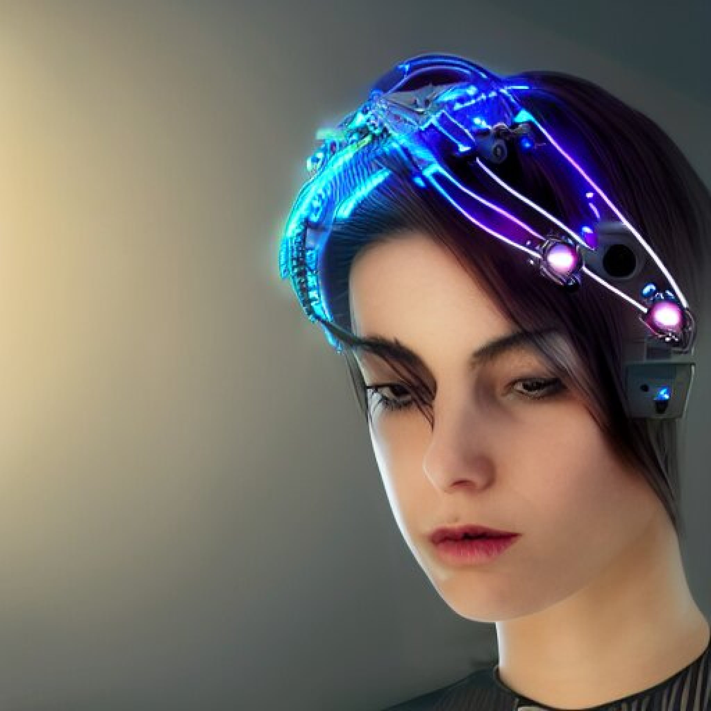

Our Project
Emot.io is a thought-provoking New Media Performance that explores the relationship between pain and pleasure. With this performance, the boundaries between pain and pleasure are tested. Pain is the limit between what's alive and what is not, pleasure its an instant satisfaction that can be experienced in different ways. Both of this feelings are common between human, animals and nature. But is it possible for a machine to feel pain or pleasure? How does a machine understand this emotional and physical states?